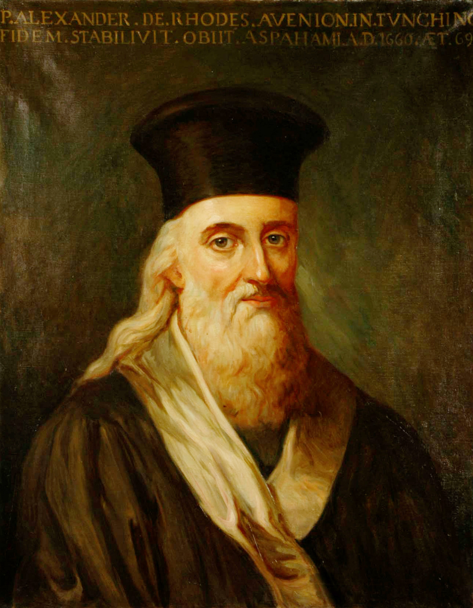
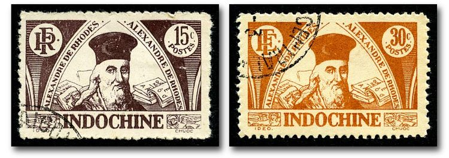
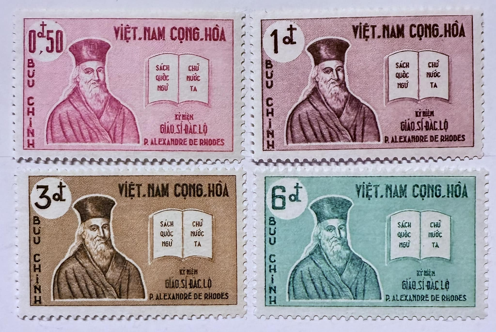
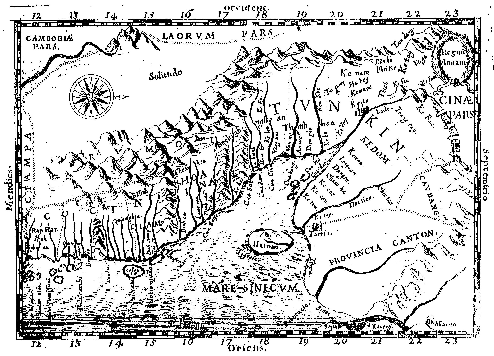
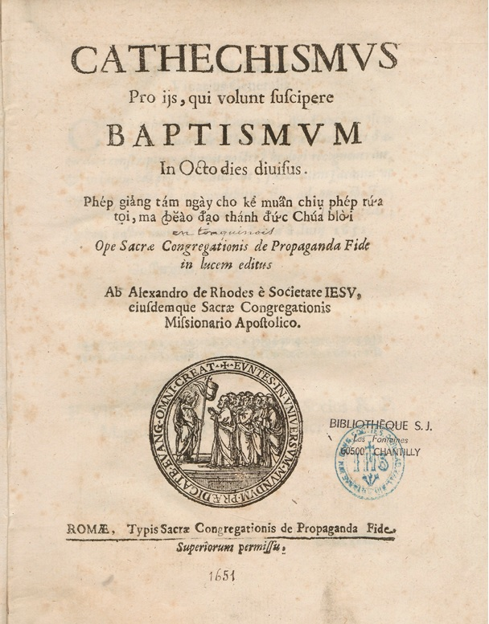
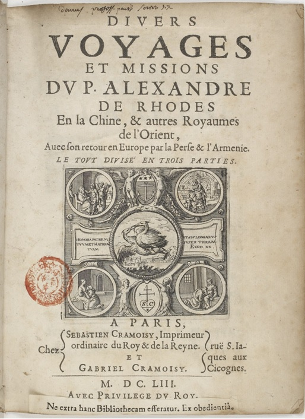
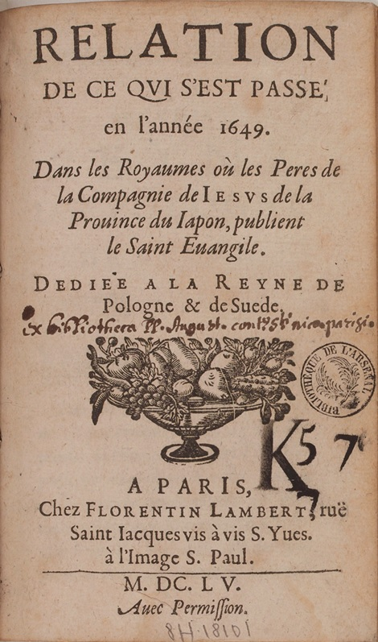
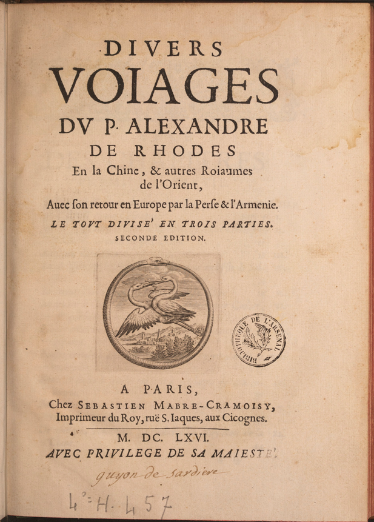
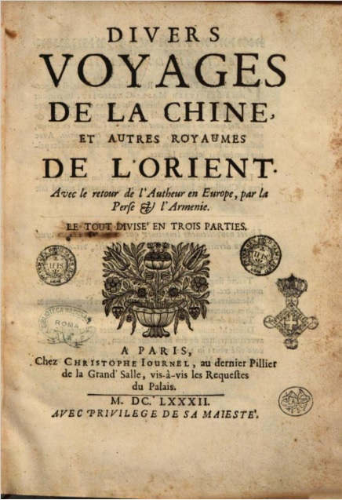

DIVERS VOYAGES ET MISSION
Digital Scholarly Edition built on Alexander de Rhodes' writings
Alexander de Rhodes was not merely a missionary, but a passionate enthusiast, an educator, and a courageous traveler.
This French monk was born on March 15, 1591, in Avignon. He founded the Paris Foreign Missions Society, developed the first Vietnamese script based on the Latin alphabet (chữ Quốc ngữ) and played a significant role in spreading Christianity throughout Asia.
One of his most remarkable and widely read works is Divers voyages et missions, in which Father Alexander recounts his 35-year journey across the East. The book is a travelogue rich with valuable ethnographic and historical observations. This digital edition invites readers on a meta-journey into the world of Jesuit discoveries.

Gallery
A visual collection of art objects, maps, documents, and philatelic records related to Alexandre de Rhodes and his missions.




Description
Primary Sources & Historical Texts
Select a historical volume below to explore its text and metadata.

Cathechismus
Sacra Congregatio de Propaganda Fide

Divers voyages et missions
S. Cramoisy et G. Cramoisy, Paris

Relation de ce qui s'est passé...
Florentin Lambert, Paris

Divers voiages du P. Alexandre de Rhodes
S. Mabre-Cramoisy, Paris

Divers voyages de la Chine et autres...
Christophe Journel, Paris
Collation
Interactive map
Project Overview
"Divers Readings of Divers Voyages et Missions" was created as part of the course "Digital Scholarly Editing: Theory, Methods and Practice" (Prof. Paola Maria Italia, University of Bologna). The author of the project is Ekaterina Krasnova, a student of the Digital Humanities and Digital Knowledge (DHDK) Master's programme.
"Divers Readings" is a pilot project representing a demo version of a broader platform dedicated to reflecting different aspects of 17th-century Jesuit missionary discourse. The French Jesuit Alexandre de Rhodes, who became famous for his missions to Vietnam, Indochina, and other Asian territories, was chosen as a representative figure.
As a case study for critical edition, the work "Divers Voyages" (first published in 1653 in Paris) was selected. Father Alexandre's work exists across several distinct editions, providing a rich basis for observing linguistic, historical-typographical, and orthographic changes over time. Consequently, an Apparatus of Variants was chosen as the primary methodological approach.
The platform was conceived not merely as a text analysis workspace, but as an interactive ecosystem combining collation tools with a digital catalogue, visual gallery, and geo-spatial mapping. It caters to both academic specialists and a broader public interested in digital history.
Goals & Core Concept
Educational Goal
to provide a broad audience with various educational tools through which they can learn something new about Alexandre de Rhodes and his missions
Scholarly Goal
to provide a ready-to-use tool for specialists in philology and linguistics; to demonstrate typographic and linguistic changes in the text
Preservation
to create an open-source platform that will allow relevant texts and other data to be collected and preserved
Future Perspectives
A long-term perspective is to expand the project beyond a single figure and build a comprehensive digital catalogue of 17th-century Jesuit missions in general. While originally conceived as a broader repository of French Jesuit literature, the current pilot narrows its scope to a comparative study of two key editions of Divers Voyages: the 1653 editio princeps published during Rhodes' lifetime and the posthumous 1682 edition.
Methodology & Modelling
FRBR Conceptual Model
The structural and textual history of Alexandre de Rhodes' works is mapped across four FRBR core entities:
- Work: The abstract intellectual creation - specifically, Rhodes' accounts of his evangelical missions in Asia and Indochina.
- Expression: The specific linguistic and structural realizations. We examine two primary expressions: the original 1653 Paris edition and the revised posthumous 1682 edition (e.g. Chapter XXI in 1653 becoming Chapter XX in 1682).
- Manifestation: The physical printed publications produced by 17th-century printing houses (Cramoisy 1653, Journel 1682), registered in our Texts catalogue with embedded PDF surrogates.
- Item: The specific digitized copies provided by memory institutions (Bibliothèque nationale de France / Gallica and Google Books) used for transcription and collation.
TEI P5 Encoding & Key Elements
| TEI Element / Attribute | Function in Data Model |
|---|---|
<witness xml:id="..."> |
Describes historical printed sources (e.g. W1653,
W1682) referenced in the apparatus.
|
<profileDesc> |
Contains <listPerson>,
<listPlace>, and <listOrg> for
prosopographical and geographical entities.
|
<roleName> |
Distinguishes real historical actors from conceptual figures (e.g. saints, sacred entities). |
<app>, <lem>,
<rdg>
|
Critical apparatus module mapping textual variations across witnesses. |
@type attribute |
Classifies variations into punctuation,
orthographic, or substantive.
|
<pb edRef="..." n="..."/> |
Specifies exact page boundaries for each physical edition. |
Methodological note on Lineation (<lb/>):
According to W. W. Greg's classic distinction, lineation and word hyphenation belong to accidentals - formal rather than substantive aspects of the text. Since the element marks a typographic line break in a specific source, it is therefore "tied" to one physical page of one edition. Line breaks differ between the two editions, and so placing<lb/>in the shared collation text would require arbitrarily choosing whose line break to consider the "base" one. In my view, this contradicted the logic of the Apparatus of Variants, where both witnesses are equal, and the text in Collation mode looked more harmonious without the initial line-by-line division.
Workflow & Interface Design
Initial testing was conducted using EVT (Edition Visualization Technology) to verify apparatus accuracy. To fulfill the visual and user-experience goals of the platform, custom UI prototypes were built in Figma and implemented as a web application forming a catalogue:
- Main: the main page of the website
- Gallery: a gallery with visual objects
- Texts: a collection of texts
- Collation: the DSE itself, designed as a collation - side-by-side parallel reading with variant highlightin.
- Map: an interactive map with place markers from the text, embedded into the website with the Leaflet library.
Bibliography
Primary Sources & Catalogued Texts
- Rhodes, Alexandre de. Divers voyages et missions du P. Alexandre de Rhodes en la Chine, & autres Royaumes de l'Orient... Paris: Sébastien Cramoisy, 1653. [Gallica BnF]
- Rhodes, Alexandre de. Divers voyages de la Chine et autres royaumes de l'orient... Paris: Christophe Journel, 1682. [Google Books]
- Rhodes, Alexandre de. Cathechismus pro iis, qui volunt suscipere Baptismum... Romae: Typis Sacrae Congregationis de Propaganda Fide, 1651.
- Rhodes, Alexandre de. Divers voiages du P. Alexandre de Rhodes en la Chine et autres... Paris, 1666.
- Rhodes, Alexandre de. Relation de ce qui s'est passé en l'année 1649... Paris, 1655.
Secondary Literature
- Burghart, Marjorie. Creating a Digital Scholarly Edition with the Text Encoding Initiative. DEMM, 2017.
- Carlyle, Allyson. "Understanding FRBR As a Conceptual Model." Library Resources & Technical Services, vol. 50, no. 4, 2006, pp. 264–273.
- Greg, W. W. "The Rationale of Copy-Text." Studies in Bibliography, vol. 3, 1950–1951, pp. 19–36.
- Madison, Olivia M. A. "The IFLA Functional Requirements for Bibliographic Records." Library Resources & Technical Services, vol. 44, no. 3, 2011, pp. 153–159.
- Shillingsburg, Peter. Development Principles for Virtual Archives and Editions. Center for Textual Studies and Digital Humanities Publications, 2013.
- TEI Consortium. TEI P5: Guidelines for Electronic Text Encoding and Interchange. Chapter 12: "Critical Apparatus", 2023. [TEI Guidelines]